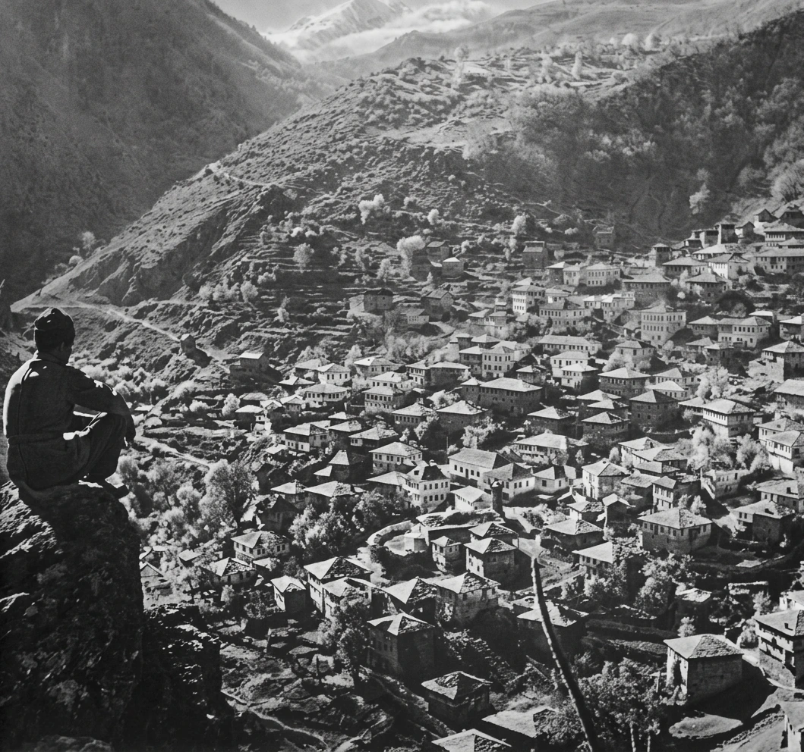

1974 exhibition essay
Over time, photography has become one of the essential ways we express reality. It carries the past into the present, helps us understand the world we live in, and shapes what we pass on to the future. It gives us a way to record facts and to improvise freely. Shaped by human imagination and feeling, those records and improvisations bring time and space into focus at the burning point of truth. Photography has entered every part of life and science so fully that we can scarcely imagine either without it.
Even in his earliest photographs, where a youthful, romantic poetry flickers, Blagoja Drnkov showed an instinct for expressing his inner life and his attitude toward the world. In the forty years since he first looked at reality through the eye of a camera, he has worked through the inner conflicts that come with maturing.
In time, the lens, once remote and impartial, became part of the way he saw. It let him look beyond the surface of things to their substance and to the thought behind them. Technical mastery gave him freedom, a way to be precise, a means of expression.
Drnkov is always attentive, always curious, always where he needs to be. Often unnoticed, he records the moment and his own response to it with the same concentration. Whatever the subject or its outward appeal, he reaches the heart of what he sees by drawing on experiences he knows well. His world is our country in all its natural, human, and social complexity. His attachment to his native place and to familiar things gives his photographs their elegiac tone, a sound that seems to pass through their silence.
It is the particular music of Macedonia. It wells up from the scattered water jugs, washes over the wrinkled face of a dry oak and across an old iron-studded gate. It spreads over quiet poppy fields, breaks through the jagged forms of Markukule, ripples among the curious children in a boat on Lake Ohrid, and trembles in a simple sprig of acacia. Everywhere, this color in black and white seems to well up from within. Here we recognize a true master. The eye of the camera serves him as the silent keys serve a pianist, drawing out the deepest emotions.
To speak of Blagoja Drnkov is to reckon with the countless kilometers of exposed film that hold his biography. They record years spent in the silent solitude of a struggle with a capricious little machine. At first there were misunderstandings. Over time, man and camera became so closely identified that they were impossible to tell apart. As in every art, it took great love, patience, and wisdom to persevere.
Just as photography has become part of life, Drnkov’s work has become part of us. For forty years it has been there, helping us see ourselves.